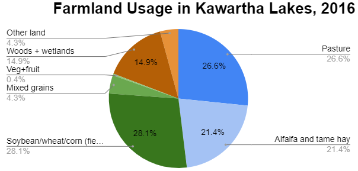

<!DOCTYPE html>
<html>

<head>
  <!-- Add Leaflet CSS and Javascript -->
 <!-- <link rel="stylesheet" href="http://cdn.leafletjs.com/leaflet-0.7.3/leaflet.css" />
 <script src="http://cdn.leafletjs.com/leaflet/v0.7.7/leaflet.js"></script> -->

 <link rel="stylesheet" href="https://unpkg.com/leaflet@1.7.1/dist/leaflet.css"
   integrity="sha512-xodZBNTC5n17Xt2atTPuE1HxjVMSvLVW9ocqUKLsCC5CXdbqCmblAshOMAS6/keqq/sMZMZ19scR4PsZChSR7A=="
   crossorigin=""/>

<!-- Make sure you put this AFTER Leaflet's CSS -->
 <script src="https://unpkg.com/leaflet@1.7.1/dist/leaflet.js"
   integrity="sha512-XQoYMqMTK8LvdxXYG3nZ448hOEQiglfqkJs1NOQV44cWnUrBc8PkAOcXy20w0vlaXaVUearIOBhiXZ5V3ynxwA=="
   crossorigin=""></script>

<!-- Add JQuery -->
<script src="https://code.jquery.com/jquery-2.1.1.min.js"></script>  

<link rel="stylesheet" href="CSS/storymap.css" />

<!-- Geometric Data -->
<script src='Data/Landuse.geojson'></script>

</head>

<body>
<div id="map"></div>
  <script>
    var map = L.map('map').setView([44.7389, -78.3922], 8);

    L.tileLayer( 'http://{s}.tile.openstreetmap.org/{z}/{x}/{y}.png', {
    attribution: '&copy; <a href="https://www.openstreetmap.org/copyright">OpenStreetMap</a>',
    subdomains: ['a','b','c']
}).addTo( map );

    // map.setView([44.7389, -78.3922], 8);

    

    


    function getColor(val, type) {
        if(type == "Landuse"){
            return val == "Woods\/Wetlands" ? '#a17015' :
        val == "Alfalfa\/Hay" ? '#b6d6e1' :
        val == "Pasture" ? '#5e8ae7' :
        val == "Soybean\/Wheat\/Corn"? '#538f34':
        '#fff';
        }
       if(type == "LandLoss"){
        return val > 25 ? "#1a9641":
        val > 0 ? "#a6d96a":
        val > -25 ? "#ffffc0":
        val > - 50 ? "#fdae61":
        "#d7191c";
       }

    }

    function style(feature) {      
      return{
        fillColor: getColor(feature.properties.Prime_Landuse, "Landuse"),
        weight: 2,
        opacity: 1,
        color: 'black',
        fillOpacity: 0.7
      };
    }

    function landLossStyle(feature) {
      return{
        fillColor: getColor(feature.properties.Land_Change, "LandLoss"),
        weight: 2,
        opacity: 1,
        color: 'black',
        fillOpacity: 0.7
      };
    }

    var geojson;

    // L.geoJson(landuse, {style: style}).addTo(map);

    function highlightFeature(e) {
    var layer = e.target;

    layer.setStyle({
        weight: 5,
        color: '#FFF',
        dashArray: '',
        fillOpacity: 0.7
    });

    if (!L.Browser.ie && !L.Browser.opera && !L.Browser.edge) {
        layer.bringToFront();
    }
    info.update(layer.feature.properties);
}

function resetHighlight(e) {
    if( currentLayerID == 76){
        geojson.resetStyle(e.target);
    }
    if(currentLayerID == 150){
        landChange.resetStyle(e.target);
    }

  
    info.update();
}

function zoomToFeature(e) {
    map.fitBounds(e.target.getBounds());
}

function onEachFeature(feature, layer) {
    
    layer.on({
        mouseover: highlightFeature,
        mouseout: resetHighlight,
        click: zoomToFeature
    });
}

geojson = L.geoJson(landuse, {
    style: style,
    onEachFeature: onEachFeature
}).addTo(map);

var landChange = new L.GeoJSON(landuse, {
    style: landLossStyle,
    onEachFeature: onEachFeature
});

//Layer controller
var currentLayerID = 76;
map.on('baselayerchange', function (e) {
   currentLayerID = e.layer._leaflet_id;
   console.log(currentLayerID); 
   UpdateLegend();
});

var overlayMaps = {
    "Primary Landuse": geojson,
    "Change In Crop Land": landChange
  };

  L.control.layers(overlayMaps).addTo(map);

//Setup for info panel
var info = L.control();

info.onAdd = function (map) {
    this._div = L.DomUtil.create('div', 'info'); // create a div with a class "info"
    this.update();
    return this._div;
};

// method that we will use to update the control based on feature properties passed
info.update = function (props) {
    if(currentLayerID == 76) {
         this._div.innerHTML = '<h4>Region: </h4>' +  (props ?
        '<b>' + props.CCSNAME + '</b><br />'  + ''
        : 'Hover over a region');
    }
    if(currentLayerID == 150){
        this._div.innerHTML = '<h4>Region: </h4>' +  (props ?
        '<b>' + props.CCSNAME + '</b><br />'  + '<p>Crop Land 2006:<br>Crop Land 2016:</p>'
        : 'Hover over a region');
    }
   
};

info.addTo(map);

//Setup for legend
var legend = L.control({position: 'bottomright'});

legend.onAdd = function (map) {

    if(currentLayerID == 76){
        var div = L.DomUtil.create('div', 'info legend'),
        val = ["Woods\/Wetlands", "Alfalfa\/Hay", "Pasture", "Soybean\/Wheat\/Corn"],
        labels = [];

    //Legend Content
    for (var i = 0; i < val.length; i++) {
        div.innerHTML +=
            '<i style="background:' + getColor(val[i], "Landuse") + '"></i> ' +
            val[i] + (val[i + 1] ? ''  + '<br><br>' : '');
    }
    }
    

    return div;
};

function UpdateLegend(){
    var div = legend.getContainer();
    // div.innerHTML = '<H4> Change the legend</h4>';
    div.innerHTML = "";

    if(currentLayerID == 76){
        var val = ["Woods\/Wetlands", "Alfalfa\/Hay", "Pasture", "Soybean\/Wheat\/Corn"];
        var labels = [];

    //Legend Content
    for (var i = 0; i < val.length; i++) {
        div.innerHTML +=
            '<i style="background:' + getColor(val[i], "Landuse") + '"></i> ' +
            val[i] + (val[i + 1] ? ''  + '<br><br>' : '');
    }
    }
    if(currentLayerID == 150){
        var val = [40, 20, -20, -40, -60];
        var labels = ["25% - 98%", "0 - 25%", "0 - -25%", "-25% - -50%", "-50% - -68%"];

    //Legend Content
    for (var i = 0; i < val.length; i++) {
        div.innerHTML +=
            '<i style="background:' + getColor(val[i], "LandLoss") + '"></i> ' +
            labels[i] + (val[i + 1] ? ''  + '<br><br>' : '');
    }
    }
}

legend.addTo(map);

  </script>
</body>

</html>